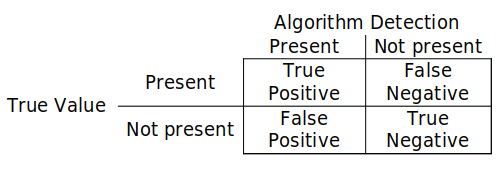
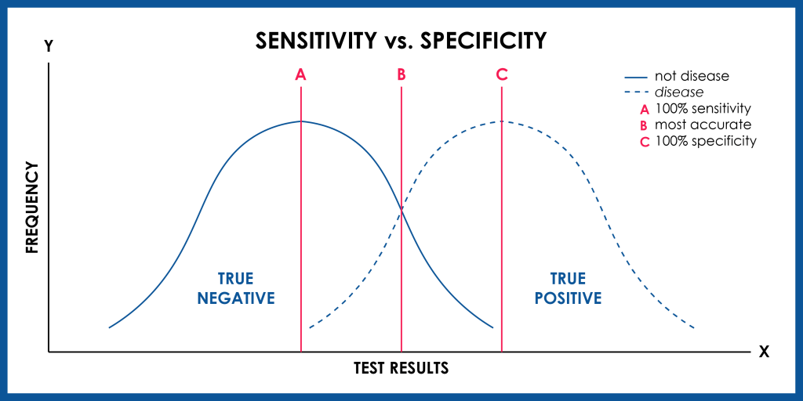
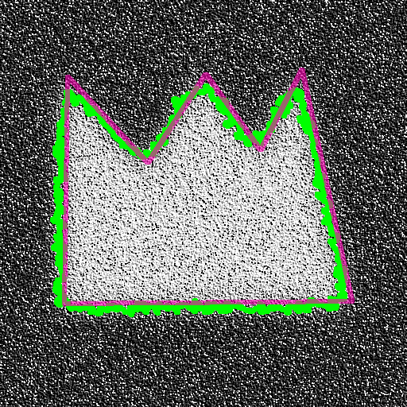

Navigation:
Slides adpated from presentations by:
After designing an image analysis workflow it is important to validate it, especially if you are planning to use the same process on multiple images. The validation strategies used will depend on they type of problem.
Your final workflow may contain some or all of these problems. In the following slides there are some examples of quantitative measurements that can be used to evaluate the performance for each problem.
Aim: Estimate a scalar or vector quantity
Method: Calculate the mean relative error
\[ mean\ relative\ error = {measured\ value - true\ value \over true\ value} \]
Aim: Decide if something is present in an image
Method: Calculate the sensitivity and specificity
\[ sensitivity = {TPs \over TPs+FNs} \] The fraction of present things that are correctly detected, 0 none detected to 1 all detected \[ specificity = {TNs \over TNs+FPs} \] The fraction of correct detection when the thing is not present, 0 all falsely detected to 1 none falsely detected
 Image from www.genomenon.com
Aim: Estimate the boundary regions of an image
Method: Calculate the difference between the segmented and ground truth boundaries \[ root\ mean\ square\ error = \sqrt{{\displaystyle\sum\limits_{i=1}^{N}(\boldsymbol{x}^s_i-\boldsymbol{x}^g_i)^2 \over N}}\] where \( N\) is the number of points, \(\boldsymbol{x}^s_i\) are the points that make up the segmented boundary (green) and \(\boldsymbol{x}^g_i\) are the points that make up the ground truth boundary (magenta)
Different metrics can be used, e.g. Hausdorff distance
For more information on validation see Chapter 10 of Handbook of Medical Imaging, Volume 2. Medical Image Processing and Analysis (K. Bowyer, 2000)
There are some useful Built-in Functions for managing results in Fiji:
Previously, we tried out Process > Batch > Macro....
There are other ways to do Batch processing in ImageJ:
Process > Batch > Macro... but run it from a macro command Templates > ImageJ 1.x > Batch > Process Folder (IJ1 Macro) and use the template to process all the files in a folder